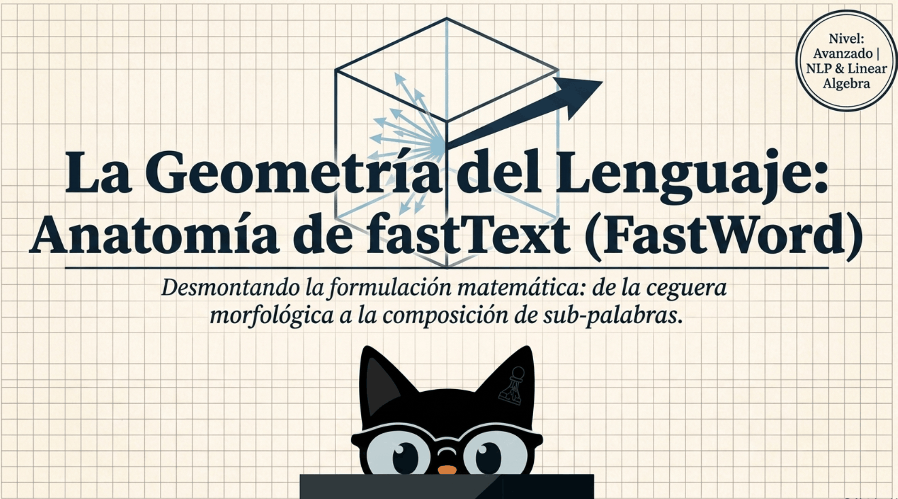
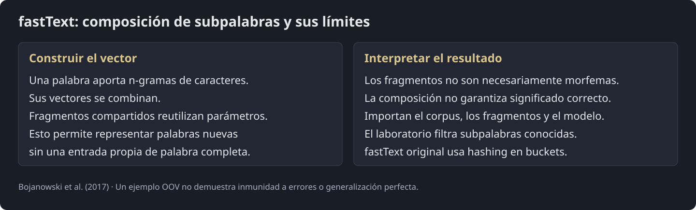
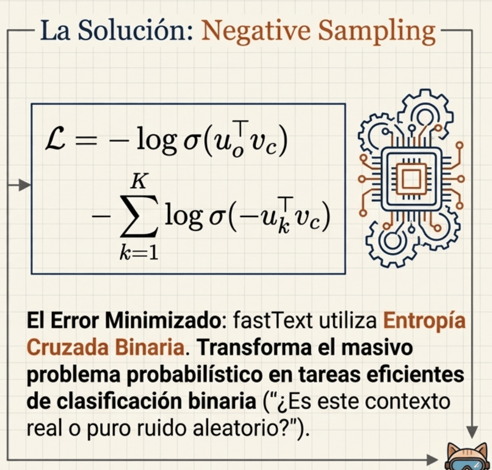
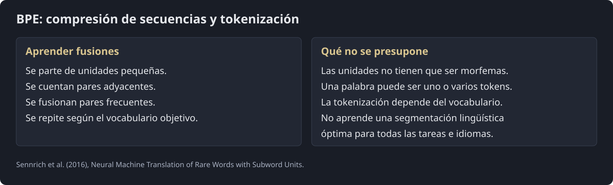
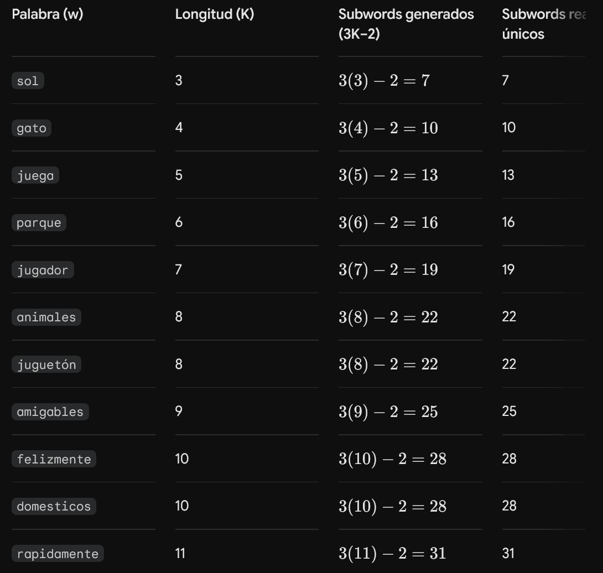
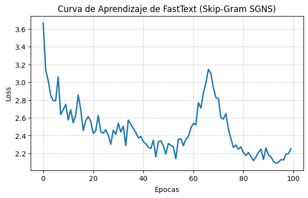
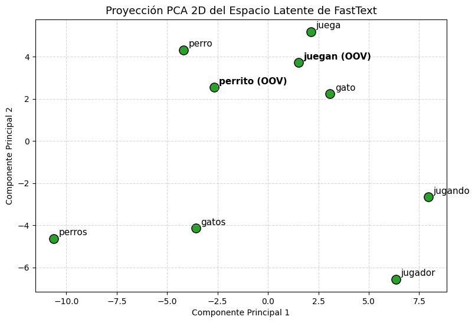
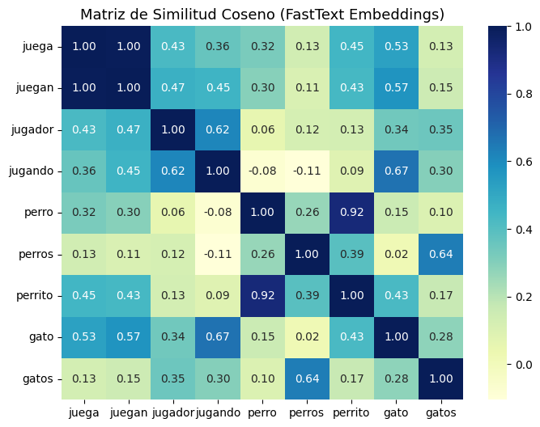
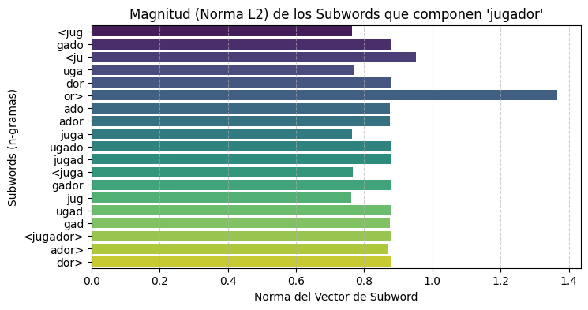

Procesamiento del Lenguaje Natural y Reconocimiento del Habla · Clase 04
04 · Introducción al NLP - Parte 3 - FastText
Contenido convertido sin ejecutar Python. Se conservan las salidas guardadas; las figuras matemáticas sustituidas y los gráficos de PE están identificados en el registro de revisión.
En esta página
Referencias3. La Geometría del Lenguaje: Anatomía de fastText ( FastWord )3.1. El Límite de los Modelos Clásicos: La Ceguera Morfológica3.2. Anatomía de la Extracción de Sub-palabrasPaso 1: Delimitadores de FronteraPaso 2: Extración Dinámica de n-gramasPaso 3: Preservación del Token HolísticoPaso 4: Superposición Vectorial en el Hiperespacio3.3. Formulación Matemática de fastText3.3.1. Probabilidad Condicional Sub-léxica3.3.2. Función de Pérdida con Negative Sampling (Muestreo Negativo)3.3.3. Interpretación de las actualizaciones3.4. Clasificación de Texto Supervisada de fastText3.4.1. La Arquitectura del Clasificador Lineal3.4.2. n-gramas de Palabras (Word n-grams) para Capturar Orden Local3.5. Sub-palabras de Longitud Fija vs. Byte Pair Encoding (BPE)3.6. Resumen4. Implementación en PyTorch4.1. Importación de dependencias y configuración del entorno1. Módulos y Librerías Utilizadas2. Semillas de Reproducibilidad4.2. Preprocesamiento, extracción de Subwords ( n -gramas) y Vocabulario1. Preprocesamiento, SubWords y Vocabularios2. Análisis de la función get_subwords4.3. Implementación del Dataset y DataLoader con collate_fn1. Propósito General2. Desglose de FastTextSkipGramDataset3. Análisis de la Función de Empaquetado (fasttext_collate_fn)4. Creación del DataLoader4.4. Definición de la Arquitectura del Modelo FastText1. Desglose del Constructor ( __init__ )3. Desglose del Método forward : Flujo y Transformación de Tensores4. Diagrama del Grafo Computacional ( forward )5. Desglose del Método get_word_vector_from_subwords4.5. Entrenamiento del Modelo1. Propósito General de la Celda 52. Configuración de Hiperparámetros e Instanciación3. Anatomía del Bucle de Entrenamiento Paso a Paso4. ¿Qué ocurre internamente con los Subwords durante el entrenamiento?5. Registro y Visualización de la Curva de Aprendizaje4.6. Inferencia y Manejo de Palabras Fuera de Vocabulario (OOV)1. Propósito General de la Celda 62. Desglose de la Función get_vector3. Desglose de la Función get_cosine_similarity4. Análisis del Experimento de Inferencia (In-Vocab vs. OOV)5. Comparativa Estructural: Word2Vec vs. FastText ante Palabras Nuevas3. La Geometría del Lenguaje: Anatomía de fastText (FastWord)

fastText comparte vectores entre n-gramas de caracteres y mantiene una entrada propia para cada palabra conocida. Así puede combinar fragmentos para representar una palabra nueva. El modelo de embeddings sigue siendo estático: una misma palabra recibe la misma representación fuera de un mecanismo contextual adicional.
Referencia: Bojanowski et al. · Subword information

Fig. 3.1. La representación combina la entrada de la palabra conocida y sus n-gramas; una palabra nueva se compone con sus subpalabras.
Referencia: Bojanowski et al. · Subword information
3.1. El Límite de los Modelos Clásicos: La Ceguera Morfológica
Tanto Word2Vec como trata a cada palabra como una unidad atómica e indivisible (un símbolo aislado). Esto genera tres problemas críticos en el lenguaje natural:
-
Ignorancia Morfológica: Palabras que comparten la misma raíz lingüística como "gato", "gatos", "gatito" o "gata" son tratadas como entidades completamente independientes, sin compartir ningún parámetro o relación estructural interna.
Esto es especialmente grave en idiomas con alta riqueza morfológica (como el español), donde un solo verbo puede tener decenas de conjugaciones distintas.
-
Palabras Fuera de Vocabulario (OOV): Si el modelo se encuentra con una palabra que no vio durante el entrenamiento (por ej., un neologismo o un error ortográfico como "asombrosamene"), es incapaz de asignarle un vector y recurre a un token genérico como "
<unk>. -
Escasez de Datos en Palabras Raras: Las palabras poco frecuentes reciben muy pocas actualizaciones de gradiente durante el entrenamiento, lo que produce coordenadas vectoriales de muy baja calidad espacial.
3.2. Anatomía de la Extracción de Sub-palabras
El modelo subléxico de Bojanowski et al. amplía Skip-gram: su puntuación suma contribuciones de n-gramas de caracteres de la palabra central y un vector de salida de palabra completa para el contexto. La implementación oficial combina entradas mediante un promedio; la formulación de puntuación del artículo se presenta como suma. El laboratorio usa EmbeddingBag(mode="sum") y debe interpretarse con esa convención.
Referencia: fastText · Implementación oficial
Paso 1: Delimitadores de Frontera
Para capturar la estructura anatómica de la palabra (distinguiendo cuándo una secuencia de caracteres actúa como prefijo, sufijo o raíz interna), se añaden caracteres especiales de frontera:
<al inicio y>al final.
- Ejemplo: La palabra central
gatose transforma en la secuencia<gato>.
Paso 2: Extración Dinámica de n-gramas
Se generan todas las subsecuencias de caracteres de longitud , donde típicamente oscila entre y (). Para (trigramas de caracteres), la palabra <gato> produce las siguientes sub-palabras:
-
<ga(Denota inicio de palabra / prefijo) -
gat -
ato -
to>(Denota final de palabra / sufijo).
Paso 3: Preservación del Token Holístico
La palabra conocida tiene una entrada propia, separada de los buckets de n-gramas. La notación delimitada ayuda a visualizarla, pero el laboratorio que reúne cadenas en un conjunto explícito es una simplificación de la estructura de datos de fastText oficial.
Referencia: fastText · Implementación oficial
Paso 4: Superposición Vectorial en el Hiperespacio
El diccionario del modelo ya no es una lista de palabras rígidas, sino un inventario masivo de sub-palabras compartidas. Cada sub-palabra posee su propio vector de peso entrenable .
La representación final de una palabra cuando actúa como palabra central en el modelo es la sumatoria vectorial (superposición espacial) de sus componentes:
Donde representa el conjunto de n-gramas de longitud a extraídos de junto al token delimitado original.

3.3. Formulación Matemática de fastText
fastText hereda el diseño predictivo de Skip-Gram con Muestreo Negativo (Negative Sampling), pero reformula el paso de cómputo para trabajar con la sumatoria de sub-palabras.

3.3.1. Probabilidad Condicional Sub-léxica
En el Skip-Gram clásico de Word2Vec, la probabilidad condicional de observar una palabra de contexto dada la palabra central viene dada por la softmax global:

Se puede definir un modelo softmax con puntuación . Sin embargo, el entrenamiento del artículo usa negative sampling: sus sigmoides distinguen pares de datos y ruido y no son una distribución normalizada de palabras de contexto. Las representaciones de salida corresponden a palabras completas.
Referencia: Bojanowski et al. · Subword information
3.3.2. Función de Pérdida con Negative Sampling (Muestreo Negativo)
Para eliminar el denominador de la softmax, cuyo coste algorítmico crece linealmente con el tamaño del vocabulario , se utiliza la aproximación de regresión logística binaria.
La función de pérdida minimizada en cada paso es la entropía cruzada binaria acumulada:
Donde:
-
es la función sigmoide.
-
representa el vector del contexto real (etiqueta positiva: ).
-
representa el vector de la -ésima palabra de ruido seleccionada aleatoriamente mediante una distribución unigrama ponderada (etiqueta negativa: ).

3.3.3. Interpretación de las actualizaciones
El gradiente aumenta puntuaciones de pares observados y reduce las de pares de ruido muestreados. Esto cambia normas y direcciones de los vectores compartidos. No garantiza acercamiento euclídeo, paralelismo ni que todos los negativos sean semánticamente incoherentes.
Referencia: Bojanowski et al. · Subword information

3.4. Clasificación de Texto Supervisada de fastText
fastText también ofrece clasificación supervisada con una arquitectura ligera. El artículo de Joulin et al. compara precisión y tiempo en datasets concretos. Esos resultados no garantizan un coste o una precisión superior para cualquier problema.
Referencia: Joulin et al. · Clasificación de texto
3.4.1. La Arquitectura del Clasificador Lineal
Para clasificar un documento que consta de múltiples palabras (y sub-palabras), fastText utiliza un modelo lineal con una capa oculta de proyección promediada.
La representación oculta o latente del documento se calcula promediando los vectores de todas las características activas en el texto:
Donde:
-
es el conjunto de características (palabras y n-gramas de caracteres) presentes en el documento.
-
es el vector embebido correspondiente a la característica .
Esta representación promediada se multiplica directamente por una matriz de pesos de salida para proyectar el texto en el espacio de clases, aplicando una función softmax (o Hierarchical Softmax en problemas con miles de categorías) para obtener la distribución de probabilidad sobre las etiquetas de clase.
3.4.2. n-gramas de Palabras (Word n-grams) para Capturar Orden Local
Un promedio de palabras conserva la presencia de «no», pero pierde su posición y alcance. Añadir n-gramas de palabras permite distinguir algunos patrones locales. No garantiza resolver la negación ni igualar a una RNN o CNN en cualquier corpus.
Referencia: Joulin et al. · Clasificación de texto
3.5. Sub-palabras de Longitud Fija vs. Byte Pair Encoding (BPE)
Existe una distinción crucial entre el enfoque de n-gramas de fastText y el algoritmo Byte Pair Encoding (BPE):

3.6. Resumen
4. Implementación en PyTorch
4.1. Importación de dependencias y configuración del entorno
Código Python · celda 44
# ==============================================================================
# CELDA 1: Librerías y Configuración de Dispositivo
# ==============================================================================
import collections
import math
import random
import matplotlib.pyplot as plt
import numpy as np
import seaborn as sns
import torch
import torch.nn as nn
import torch.nn.functional as F
from sklearn.decomposition import PCA
from sklearn.manifold import TSNE
from torch.utils.data import DataLoader, Dataset
# Fijar semillas para reproducibilidad
SEED = 42
random.seed(SEED)
np.random.seed(SEED)
torch.manual_seed(SEED)
if torch.cuda.is_available():
torch.cuda.manual_seed_all(SEED)
device = torch.device("cuda" if torch.cuda.is_available() else "cpu")
print(f"-> Entorno listo. Dispositivo de cómputo en uso: {device}")
-> Entorno listo. Dispositivo de cómputo en uso: cpu
1. Módulos y Librerías Utilizadas
-
collectionsyrandom(Biblioteca estándar de Python):-
collections.Counter: Estructura de datos de alto rendimiento para contar frecuencias de aparición de palabras en el corpus. Se utiliza para construir el vocabulario y calcular la distribución de probabilidad unigrama para el muestreo negativo (Negative Sampling). -
randomymath:
Utilizados para operaciones matemáticas básicas y aleatoriedad en el pipeline de datos.
-
-
torch,torch.nn,torch.nn.functional(PyTorch Core):-
torch: Manejo de tensores multidimensionales y cómputo numérico acelerado por hardware. -
nn.Module: Clase base sobre la cual se definen todas las arquitecturas neuronales. -
nn.EmbeddingBag: La capa clave de FastText. A diferencia de nn.Embedding (que devuelve un tensor 3D de embeddings por cada palabra),nn.EmbeddingBagtoma una secuencia plana de índices de subwords con desplazamientos (offsets) y realiza la operación de suma () de manera eficiente en C++/CUDA en un solo paso de memoria. -
F.logsigmoid / F.cosine_similarity: Funciones matemáticas diferenciables para calcular la función de pérdida del modelo y la similitud geométrica entre vectores.
-
-
torch.utils.data.{Dataset, DataLoader}:
- Abstracciones estándar de PyTorch para desacoplar el código de generación/almacenamiento de muestras (
Dataset) del código de consumo por lotes (batches), paralelización y barajado (DataLoader).
- Abstracciones estándar de PyTorch para desacoplar el código de generación/almacenamiento de muestras (
-
sklearn.decomposition.PCAysklearn.manifold.TSNE:- Algoritmos de reducción de dimensionalidad no supervisada para proyectar los embeddings desde un espacio de alta dimensión () a un plano visualizable en 2D ().
-
matplotlib.pyplotyseaborn:- Generación de gráficos estáticos de alta calidad (curvas de pérdida, proyecciones espaciales, mapas de calor de similitud coseno y barras de magnitudes).
2. Semillas de Reproducibilidad
-
Control de determinismo: Las redes neuronales inicializan sus matrices de pesos con valores pseudoaleatorios (distribuciones uniformes o normales). Fijar la semilla en los motores de números aleatorios de Python (random), NumPy (np.random) y PyTorch (torch.manual_seed) ayuda a repetir las secuencias pseudoaleatorias en un entorno fijo. No garantiza resultados idénticos entre dispositivos, versiones o algoritmos no deterministas; también deben controlarse el muestreo, los workers y la configuración del backend.
-
Agnosticismo de hardware (
torch.device): Google Colab permite alternar dinámicamente entre entornos de CPU y GPU (T4, V100, A100). El condicional detecta automáticamente si existe una GPU disponible para enviar los tensores y parámetros del modelo a la memoria VRAM mediante.to(device).
Referencia: PyTorch: reproducibilidad
4.2. Preprocesamiento, extracción de Subwords (-gramas) y Vocabulario
Código Python · celda 48
# ==============================================================================
# CELDA 2: Extracción de Subwords y Construcción de Vocabularios
# ==============================================================================
def get_subwords(word, min_n=3, max_n=5):
"""Extrae n-gramas de caracteres y la palabra completa con delimitadores."""
extended = f"<{word}>"
subwords = [extended] # Palabra completa encapsulada
for n in range(min_n, max_n + 1):
for i in range(len(extended) - n + 1):
subwords.append(extended[i : i + n])
return list(set(subwords))
# Corpus de entrenamiento en español (rico en variaciones morfológicas)
corpus = """
el gato juega en el jardin con el perro pequeño
el perro salta y corre felizmente por el campo
un gato jugando duerme en el sofa calido
los perros y gatos son animales domesticos amigables
el niño juega con su perro juguetón en el parque
los gatos duermen todo el dia bajo la luz del sol
un perro guardián corre rapidamente hacia el jardin
el jugador entrena jugando futbol en la cancha
"""
def preprocess_corpus(corpus_text):
# Limpieza básica
tokens = corpus_text.lower().replace("\n", " ").split()
tokens = [w for w in tokens if len(w) > 1]
return tokens
tokens = preprocess_corpus(corpus)
word_counts = collections.Counter(tokens)
# Vocabulario de Palabras
word2idx = {w: i for i, (w, _) in enumerate(word_counts.items())}
idx2word = {i: w for w, i in word2idx.items()}
# Vocabulario de Subwords
subword2idx = {}
word_to_subwords = {}
for word in word2idx.keys():
sws = get_subwords(word, min_n=3, max_n=5)
word_to_subwords[word] = sws
for sw in sws:
if sw not in subword2idx:
subword2idx[sw] = len(subword2idx)
idx2subword = {i: sw for sw, i in subword2idx.items()}
print(f"-> Total de tokens en el corpus: {len(tokens)}")
print(f"-> Tamaño del vocabulario de palabras: {len(word2idx)}")
print(f"-> Tamaño del vocabulario de subwords: {len(subword2idx)}")
print(
f"-> Ejemplo para 'jugando': {word_to_subwords.get('jugando', 'No encontrado')}"
)
-> Total de tokens en el corpus: 70 -> Tamaño del vocabulario de palabras: 44 -> Tamaño del vocabulario de subwords: 515 -> Ejemplo para 'jugando': ['<jug', '<ju', 'uga', 'jugan', 'juga', 'and', '<jugando>', 'gand', 'do>', '<juga', 'ugan', 'jug', 'ando>', 'ndo>', 'ando', 'ugand', 'gando', 'ndo', 'gan']
1. Preprocesamiento, SubWords y Vocabularios
Código Python · celda 50
corpus = """
el gato juega en el jardin con el perro pequeño
el perro salta y corre felizmente por el campo
un gato jugando duerme en el sofa calido
los perros y gatos son animales domesticos amigables
el niño juega con su perro juguetón en el parque
los gatos duermen todo el dia bajo la luz del sol
un perro guardián corre rapidamente hacia el jardin
el jugador entrena jugando futbol en la cancha
"""
El corpus está diseñado deliberadamente en español con variantes flexivas y derivativas de una misma raíz morfológica:
-
Raíz
jueg- / jug-: juega, jugando, juguetón, jugador. -
Raíz
perr-: perro, perros. -
Raíz
gat-: gato, gatos. -
Raíz
duerm-: duerme, duermen. -
Morfemas adverbiales/adjetivales:</font
felizmente, rapidamente, amigables, domesticos.
2. Análisis de la función get_subwords
Código Python · celda 53
def get_subwords(word, min_n=3, max_n=5):
"""Extrae n-gramas de caracteres y la palabra completa con delimitadores."""
extended = f"<{word}>"
subwords = [extended] # Palabra completa encapsulada
for n in range(min_n, max_n + 1):
for i in range(len(extended) - n + 1):
subwords.append(extended[i : i + n])
return list(set(subwords))
[Palabra Original: "gato"]
│
▼
[Encapsulada: "<gato>"] (Longitud L = 6)
│
┌────────┼────────────────┬────────────────┐
│ │ │ │
▼ ▼ ▼ ▼
Token n=3 (Tri-gramas) n=4 (4-gramas) n=5 (5-gramas)
Completo - "<ga" - "<gat" - "<gato"
"<gato>" - "gat" - "gato" - "gato>"
- "ato" - "ato>"
- "to>"
¿Por qué se delimita con < y >?
Los delimitadores distinguen fragmentos iniciales, internos y finales. No identifican de forma automática morfemas ni eliminan ambigüedad semántica. En la implementación con hashing, distintas cadenas pueden además caer en el mismo bucket.
Referencia: fastText · Implementación oficial
¿Por qué se incluye la palabra completa "<gato>"
Para <gato> y longitudes 3–5, hay 4 trigramas (<ga, gat, ato, to>), 3 tetragramas (<gat, gato, ato>) y 2 pentagramas (<gato, gato>). El laboratorio añade <gato> como entrada completa: 10 cadenas distintas en este caso. Las cadenas deben escaparse como texto para que el navegador no las interprete como etiquetas HTML.
Referencia: Bojanowski et al. · Subword information
¿Por qué el tamaño del vocabulario de Subwords es tan grande (~515)?
Una cadena delimitada de longitud genera apariciones de longitud . Para longitudes 3–5 y , el total de apariciones más la entrada completa es . El número de cadenas distintas puede ser menor por repeticiones; un conjunto también puede fusionar la entrada completa con una subcadena idéntica.
Referencia: Bojanowski et al. · Subword information

Causas de la dimensión del Vocabulario resultante
El tamaño real de subword2idx se obtiene ejecutando len(subword2idx) sobre el corpus y el extractor exactos. No se puede inferir con conteos aproximados por longitud. El laboratorio asigna índices explícitos a las cadenas; fastText oficial usa buckets para los n-gramas y admite colisiones.
Referencia: fastText · Implementación oficial
Resumen
-
word2idx/idx2word: Diccionarios bidireccionales con las 34 palabras únicas del corpus. -
word_to_subwords: Tabla hash que mapea cada palabra a su lista de subwords. Permite obtener de inmediato los componentes morfológicos en el método__getitem__del Dataset. -
subword2idx/idx2subword: Diccionarios con los 515 subwords únicos. El tamaño de este diccionario define directamente el parámetronum_embeddingsde la capann.EmbeddingBag(num_embeddings=515,embedding_dim=64).
4.3. Implementación del Dataset y DataLoader con collate_fn
Código Python · celda 62
# ==============================================================================
# CELDA 3: PyTorch Dataset y DataLoader con Collate Function para EmbeddingBag
# ==============================================================================
class FastTextSkipGramDataset(Dataset):
def __init__(
self,
tokens,
word2idx,
subword2idx,
word_to_subwords,
window_size=2,
num_negatives=5,
):
self.samples = []
self.word2idx = word2idx
self.subword2idx = subword2idx
self.word_to_subwords = word_to_subwords
self.vocab_size = len(word2idx)
self.num_negatives = num_negatives
# Distribución unigrama para muestreo negativo (elevada a la potencia 0.75)
counts = [word_counts[idx2word[i]] for i in range(self.vocab_size)]
probs = np.array(counts, dtype=np.float32) ** 0.75
self.neg_probs = probs / np.sum(probs)
# Generación de pares (centro, contexto)
token_indices = [word2idx[w] for w in tokens]
for i, center_idx in enumerate(token_indices):
start = max(0, i - window_size)
end = min(len(token_indices), i + window_size + 1)
for j in range(start, end):
if i != j:
pos_context_idx = token_indices[j]
self.samples.append((center_idx, pos_context_idx))
def __len__(self):
return len(self.samples)
def __getitem__(self, idx):
center_idx, pos_ctx_idx = self.samples[idx]
center_word = idx2word[center_idx]
# Índices de subwords para la palabra central
subwords = self.word_to_subwords[center_word]
subword_indices = [self.subword2idx[sw] for sw in subwords]
# Muestreo negativo
neg_samples = []
while len(neg_samples) < self.num_negatives:
neg_idx = np.random.choice(self.vocab_size, p=self.neg_probs)
if neg_idx != pos_ctx_idx and neg_idx != center_idx:
neg_samples.append(neg_idx)
return subword_indices, pos_ctx_idx, neg_samples
def fasttext_collate_fn(batch):
"""Empaqueta subwords en arrays 1D con offsets para nn.EmbeddingBag."""
flat_subwords = []
offsets = [0]
pos_targets = []
neg_targets = []
for subword_indices, pos_ctx, negs in batch:
flat_subwords.extend(subword_indices)
offsets.append(offsets[-1] + len(subword_indices))
pos_targets.append(pos_ctx)
neg_targets.append(negs)
# El último offset no es necesario para EmbeddingBag
offsets = offsets[:-1]
return (
torch.tensor(flat_subwords, dtype=torch.long),
torch.tensor(offsets, dtype=torch.long),
torch.tensor(pos_targets, dtype=torch.long),
torch.tensor(neg_targets, dtype=torch.long),
)
# Instanciar Dataset y DataLoader
dataset = FastTextSkipGramDataset(
tokens,
word2idx,
subword2idx,
word_to_subwords,
window_size=3,
num_negatives=5,
)
dataloader = DataLoader(
dataset, batch_size=16, shuffle=True, collate_fn=fasttext_collate_fn
)
print(f"-> Total de ejemplos Skip-gram generados: {len(dataset)}")
-> Total de ejemplos Skip-gram generados: 408
1. Propósito General
Cada muestra contiene subpalabras de longitud variable, un contexto positivo y K negativos muestreados. La función collate_fn concatena los índices y registra dónde empieza cada bolsa. La exclusión de negativos depende del código: no hay que suponer que todos queden fuera de la ventana entera. Con longitudes 3–5 y entrada completa, «sol» produce 7 cadenas y «rapidamente», de 11 letras, produce 31 apariciones antes de deduplicar.
Referencia: Bojanowski et al. · Subword information
2. Desglose de FastTextSkipGramDataset
Código Python · celda 65
class FastTextSkipGramDataset(Dataset):
def __init__(
self,
tokens,
word2idx,
subword2idx,
word_to_subwords,
window_size=2,
num_negatives=5,
):
...
A. Generación de Pares Skip-Gram (Ventana Deslizante)
El objetivo de Skip-Gram es predecir las palabras de contexto a partir de una palabra central dada. Para ello, se desliza una ventana simétrica de radio window_size ( en la llamada final):
Texto: "... [el] [perro] (salta) [y] [corre] ..."
▲ ▲ ▲ ▲
Posición: i-2 i-1 i i+1 i+2
Contextos Positivos Centro
Lógica del bucle
Código Python · celda 67
token_indices = [word2idx[w] for w in tokens]
for i, center_idx in enumerate(token_indices):
start = max(0, i - window_size)
end = min(len(token_indices), i + window_size + 1)
for j in range(start, end):
if i != j:
pos_context_idx = token_indices[j]
self.samples.append((center_idx, pos_context_idx))
-
Si es la posición actual, se toman todas las palabras en el rango excluyendo la posición central ().
Esto genera la lista
self.samplescon todas las tuplas de entrenamiento positivas .
B. Distribución Unigrama Modificada ()
El laboratorio usa , como la elección habitual de Word2Vec SGNS. No es una constante universal de fastText: la implementación oficial de su muestreo negativo utiliza la raíz cuadrada de los conteos. Hay que declarar qué distribución implementa cada ejemplo.
Referencia: fastText · Implementación oficial
Código Python · celda 70
counts = [word_counts[idx2word[i]] for i in range(self.vocab_size)]
probs = np.array(counts, dtype=np.float32) ** 0.75
self.neg_probs = probs / np.sum(probs)
Efecto matemático del exponente
-
Reduce drásticamente la probabilidad de palabras con frecuencias extremas (stop words).
-
Incrementa de forma relativa la probabilidad de muestreo de palabras poco frecuentes sin hacerlas uniformes.
C. Métodos __len__ y __getitem__
Código Python · celda 73
def __len__(self):
return len(self.samples)
Indica al
DataLoadercuántos pares existen en total para calcular el número de pasos (steps) por época.
Código Python · celda 75
def __getitem__(self, idx):
center_idx, pos_ctx_idx = self.samples[idx]
center_word = idx2word[center_idx]
# 1. Recuperar la lista de subwords de la palabra central y sus IDs
subwords = self.word_to_subwords[center_word]
subword_indices = [self.subword2idx[sw] for sw in subwords]
# 2. Muestreo de K palabras negativas
neg_samples = []
while len(neg_samples) < self.num_negatives:
neg_idx = np.random.choice(self.vocab_size, p=self.neg_probs)
if neg_idx != pos_ctx_idx and neg_idx != center_idx:
neg_samples.append(neg_idx)
return subword_indices, pos_ctx_idx, neg_samples
Por cada llamada individual, __getitem__ retorna:
-
subword_indices: Lista de longitud variable : que componen la palabra central.
-
pos_ctx_idx: Entero escalar con el ID de la palabra real de contexto (etiqueta positiva). -
neg_samples: Lista de enteros con IDs de palabras que no corresponden al contexto (etiquetas negativas).
3. Análisis de la Función de Empaquetado (fasttext_collate_fn)
Por defecto, PyTorch intenta apilar los elementos devueltos por getitem usando torch.stack. Si los tamaños difieren (como ocurre con las listas de subwords), el código generará un error:
Para evitar el uso ineficiente de padding con ceros, PyTorch ofrece
nn.EmbeddingBag, el cual procesa una estructura de array 1D plano contiguo junto con un vector de offsets (desplazamientos).
Código Python · celda 78
def fasttext_collate_fn(batch):
flat_subwords = []
offsets = [0]
pos_targets = []
neg_targets = []
for subword_indices, pos_ctx, negs in batch:
flat_subwords.extend(subword_indices) # Concatena al final del array 1D
offsets.append(
offsets[-1] + len(subword_indices)
) # Guarda dónde inicia la sig. palabra
pos_targets.append(pos_ctx)
neg_targets.append(negs)
# El último offset no es necesario para nn.EmbeddingBag
offsets = offsets[:-1]
return (
torch.tensor(flat_subwords, dtype=torch.long),
torch.tensor(offsets, dtype=torch.long),
torch.tensor(pos_targets, dtype=torch.long),
torch.tensor(neg_targets, dtype=torch.long),
)
A. Traza paso a paso del funcionamiento de offsets y flat_subwords
Supongamos un mini-lote (batch) de 3 palabras centrales:
-
Ejemplo 0:
"sol"3 subwords con IDs: [10, 15, 22] -
Ejemplo 1:
"gato"4 subwords con IDs: [44, 12, 8, 9] -
Ejemplo 2:
"en"2 subwords con IDs: [3, 5]
Paso a paso en el bucle:
Inicio: offsets = [0], flat_subwords = []
Procesar "sol": flat_subwords = [10, 15, 22]
offsets = [0, 0 + 3] -> [0, 3]
Procesar "gato": flat_subwords = [10, 15, 22, 44, 12, 8, 9]
offsets = [0, 3, 3 + 4] -> [0, 3, 7]
Procesar "en": flat_subwords = [10, 15, 22, 44, 12, 8, 9, 3, 5]
offsets = [0, 3, 7, 7 + 2] -> [0, 3, 7, 9]
Recorte final: offsets[:-1] -> [0, 3, 7]
B. ¿Cómo interpreta nn.EmbeddingBag estos tensores?
Con include_last_offset=False, los offsets [0,3,7] dividen los índices planos en los intervalos [0,3), [3,7) y [7,fin). EmbeddingBag(mode="sum") suma las filas de cada bolsa. Evita materializar el tensor completo de embeddings intermedios; el número de kernels y el ahorro concreto dependen del backend y de las formas.
Referencia: PyTorch · EmbeddingBag
4. Creación del DataLoader
Código Python · celda 82
dataset = FastTextSkipGramDataset(
tokens,
word2idx,
subword2idx,
word_to_subwords,
window_size=3,
num_negatives=5,
)
dataloader = DataLoader(
dataset, batch_size=16, shuffle=True, collate_fn=fasttext_collate_fn
)
-
batch_size=16: Agrupa 16 pares Skip-Gram por cada paso de entrenamiento. -
shuffle=True: Baraja el conjunto de datos al inicio de cada época para evitar ciclos repetitivos de gradiente y romper correlaciones locales entre oraciones adyacentes. -
collate_fn=fasttext_collate_fn: Sobrescribe el empaquetador predeterminado de PyTorch para estructurar los 4 tensores resultantes listos para el método forward del modelo FastText:-
subwords_flat: Tensor 1D de enteros (torch.long). -
offsets: Tensor 1D con las posiciones de corte (torch.long). -
pos_targets: Tensor 1D con los IDs positivos de tamaño[batch_size]. -
neg_targets: Tensor 2D con las muestras negativas de tamaño[batch_size, num_negatives].
-
4.4. Definición de la Arquitectura del Modelo FastText
Código Python · celda 85
# ==============================================================================
# CELDA 4: Arquitectura FastText en PyTorch
# ==============================================================================
class FastTextModel(nn.Module):
def __init__(self, num_subwords, num_words, embedding_dim):
super(FastTextModel, self).__init__()
# EmbeddingBag calcula la suma de los subwords para cada palabra de entrada (v_w = sum(z_g))
self.subword_embeddings = nn.EmbeddingBag(
num_embeddings=num_subwords,
embedding_dim=embedding_dim,
mode="sum",
sparse=False,
)
# Embeddings de contexto para palabras positivas y negativas
self.context_embeddings = nn.Embedding(
num_embeddings=num_words, embedding_dim=embedding_dim
)
# Inicialización de pesos
initrange = 0.5 / embedding_dim
self.subword_embeddings.weight.data.uniform_(-initrange, initrange)
self.context_embeddings.weight.data.uniform_(-initrange, initrange)
def forward(self, subwords_flat, offsets, pos_context, neg_context):
# 1. Vector de la palabra central (suma de subwords): [batch_size, embed_dim]
v_center = self.subword_embeddings(subwords_flat, offsets)
# 2. Vector del contexto positivo: [batch_size, embed_dim]
u_pos = self.context_embeddings(pos_context)
# 3. Vectores del contexto negativo: [batch_size, num_negatives, embed_dim]
u_neg = self.context_embeddings(neg_context)
# Pérdida de pares positivos: log(sigmoid(v_center · u_pos))
pos_scores = torch.sum(v_center * u_pos, dim=1) # [batch_size]
pos_loss = F.logsigmoid(pos_scores)
# Pérdida de muestras negativas: sum(log(sigmoid(-v_center · u_neg)))
# [batch_size, 1, embed_dim] @ [batch_size, embed_dim, num_negatives]
neg_scores = torch.bmm(
u_neg, v_center.unsqueeze(2)
).squeeze(-1) # [batch_size, num_negatives]
neg_loss = torch.sum(F.logsigmoid(-neg_scores), dim=1)
# Retornar la pérdida negativa promedio
loss = -(pos_loss + neg_loss).mean()
return loss
def get_word_vector_from_subwords(self, subword_ids):
"""Calcula el vector de cualquier palabra dada su lista de IDs de subwords."""
indices = torch.tensor(subword_ids, dtype=torch.long, device=device)
offsets = torch.tensor([0], dtype=torch.long, device=device)
with torch.no_grad():
vec = self.subword_embeddings(indices, offsets)
return vec.squeeze(0)
1. Desglose del Constructor (__init__)
Código Python · celda 87
class FastTextModel(nn.Module):
def __init__(self, num_subwords, num_words, embedding_dim):
super(FastTextModel, self).__init__()
# 1. Tabla de Embeddings de Subwords con suma integrada
self.subword_embeddings = nn.EmbeddingBag(
num_embeddings=num_subwords,
embedding_dim=embedding_dim,
mode="sum",
sparse=False,
)
# 2. Tabla de Embeddings de Palabras de Contexto
self.context_embeddings = nn.Embedding(
num_embeddings=num_words, embedding_dim=embedding_dim
)
# 3. Inicialización uniforme de pesos
initrange = 0.5 / embedding_dim
self.subword_embeddings.weight.data.uniform_(-initrange, initrange)
self.context_embeddings.weight.data.uniform_(-initrange, initrange)
A. Capa de Entrada: nn.EmbeddingBag
EmbeddingBag(mode="sum") busca y suma las filas de cada bolsa sin construir todos los embeddings intermedios. Esto puede ahorrar memoria frente a un tensor rellenado, pero no existe un porcentaje fijo de ahorro. nn.Embedding también admite índices planos; por sí sola no exige padding ni una salida 3D.
Referencia: PyTorch · EmbeddingBag
B. Capa de Contexto: nn.Embedding
-
En FastText original, la palabra central se descompone en subwords, pero las palabras de contexto (tanto positivas como negativas) se representan como tokens atómicos completos.
-
Tamaño: Matriz donde () y .
C. Inicialización de Pesos (uniform_)
Una inicialización pequeña limita la escala inicial de las puntuaciones. Para la pérdida logística combinada, : una predicción positiva muy equivocada puede mantener un gradiente grande aunque la derivada de la sigmoide aislada sea pequeña. No se debe concluir que la pérdida se congela solo porque sea grande.
Referencia: PyTorch · CrossEntropyLoss
3. Desglose del Método forward: Flujo y Transformación de Tensores
Veamos las dimensiones de los tensores paso a paso para un mini-lote con:
- Tamaño de batch:
- Dimensión de embedding:
- Número de negativos:
Tensores de Entrada:
- subwords_flat: [Total_Subwords] (ej. ~240 índices enteros contiguos)
- offsets: [B] = [16] (punteros de inicio de cada palabra)
- pos_context: [B] = [16] (IDs de palabras positivas)
- neg_context: [B, K] = [16, 5] (IDs de palabras negativas)
Paso 1: Vector de la Palabra Central ()
v_center = self.subword_embeddings(subwords_flat, offsets)
EmbeddingBagagrupa los subwords delimitados poroffsetsy suma sus vectores:
- Dimensión resultante: .
Paso 2: Vectores de Contexto Positivo y Negativo
u_pos = self.context_embeddings(pos_context) # [B, D] -> [16, 64]
u_neg = self.context_embeddings(neg_context) # [B, K, D] -> [16, 5, 64]
-
u_posextrae el vector de contexto de la palabra real: . -
u_negextrae los vectores de contexto de las palabras negativas para cada elemento del lote: .
Paso 3: Puntuación y Pérdida Positiva
pos_scores = torch.sum(v_center * u_pos, dim=1) # [B]
pos_loss = F.logsigmoid(pos_scores) # [B]
-
v_center * u_pos: Realiza la multiplicación elemento a elemento (Hadamard) de dimensión . -
torch.sum(..., dim=1): Suma sobre la dimensión latente , obteniendo el producto punto exacto:
F.logsigmoid(...): Aplica directamente de forma numéricamente estable contra desbordamientos (overflow/underflow).
Paso 4: Puntuación y Pérdida Negativa con torch.bmm
u_neg tiene forma [B,K,D] y v_center.unsqueeze(2), [B,D,1]. torch.bmm produce [B,K,1]. Se elimina solo el último eje con .squeeze(-1), manteniendo [B,K] incluso si B o K valen 1. La suma de logsigmoid(-neg_scores) sobre K da una contribución [B].
Referencia: PyTorch · EmbeddingBag
Paso 5: Cálculo de la Pérdida Total del Lote
loss = -(pos_loss + neg_loss).mean()
return loss
-
Suma la contribución positiva y negativa: .
-
Aplica el signo negativo general (para convertir la maximización de verosimilitud en minimización de pérdida).
-
.mean(): Promedia la pérdida sobre los ejemplos del lote, devolviendo un único escalar (torch.Tensorde 0 dimensiones) sobre el cual se ejecutaráloss.backward().
4. Diagrama del Grafo Computacional (forward)
subwords_flat ──┐
offsets ──┴─► [nn.EmbeddingBag] ────► v_center [B, D] ──┬────────────────────────┐
│ │
pos_context ────► [nn.Embedding] ────► u_pos [B, D] ──┴─► Dot Product (sum) │
│ │
pos_scores [B] │
│ │
log(sigmoid) │
│ │
pos_loss [B] ▼
│ unsqueeze(2) [B, D, 1]
│ │
neg_context ────► [nn.Embedding] ────► u_neg [B, K, D] ─────────────┴────────► [torch.bmm]
│
neg_scores [B, K]
│
log(sigmoid(-x))
│
neg_loss [B]
│
▼
Loss = - (pos_loss + neg_loss).mean()
5. Desglose del Método get_word_vector_from_subwords
Código Python · celda 101
def get_word_vector_from_subwords(self, subword_ids):
"""Calcula el vector de cualquier palabra dada su lista de IDs de subwords."""
indices = torch.tensor(subword_ids, dtype=torch.long, device=device)
offsets = torch.tensor([0], dtype=torch.long, device=device)
with torch.no_grad():
vec = self.subword_embeddings(indices, offsets)
return vec.squeeze(0)
-
Función: Este método se utiliza exclusivamente durante la inferencia o evaluación (Celdas 6 y 7).
-
torch.no_grad(): Desactiva el motor de autograd (diferenciación automática), evitando consumir memoria VRAM en el cálculo y almacenamiento de grafos de gradientes. -
offsets = torch.tensor([0]): Como solo estamos consultando una única palabra a la vez, se le indica ann.EmbeddingBagque todos los índices del tensorindicespertenecen a una única bolsa que inicia en la posición0. -
Retorno: Devuelve un tensor 1D de tamaño , que representa el vector semántico continuo de la palabra consultada (incluso si se trata de una palabra fuera de vocabulario / OOV).
4.5. Entrenamiento del Modelo
Código Python · celda 104
# ==============================================================================
# CELDA 5: Bucle de Entrenamiento
# ==============================================================================
EMBEDDING_DIM = 64
EPOCHS = 100
LEARNING_RATE = 0.02
model = FastTextModel(
num_subwords=len(subword2idx),
num_words=len(word2idx),
embedding_dim=EMBEDDING_DIM,
).to(device)
optimizer = torch.optim.AdamW(model.parameters(), lr=LEARNING_RATE)
loss_history = []
print("-> Iniciando entrenamiento de FastText...")
model.train()
for epoch in range(1, EPOCHS + 1):
total_loss = 0.0
for subwords_flat, offsets, pos_ctx, neg_ctx in dataloader:
subwords_flat = subwords_flat.to(device)
offsets = offsets.to(device)
pos_ctx = pos_ctx.to(device)
neg_ctx = neg_ctx.to(device)
optimizer.zero_grad()
loss = model(subwords_flat, offsets, pos_ctx, neg_ctx)
loss.backward()
optimizer.step()
total_loss += loss.item()
avg_loss = total_loss / len(dataloader)
loss_history.append(avg_loss)
if epoch % 20 == 0 or epoch == 1:
print(f"Epoch [{epoch:03d}/{EPOCHS:03d}] | Loss: {avg_loss:.4f}")
# Gráfica de convergencia de pérdida
plt.figure(figsize=(7, 4))
plt.plot(loss_history, color="#1f77b4", lw=2)
plt.title("Curva de Aprendizaje de FastText (Skip-Gram SGNS)")
plt.xlabel("Épocas")
plt.ylabel("Loss")
plt.grid(True, linestyle="--", alpha=0.6)
plt.show()
-> Iniciando entrenamiento de FastText... Epoch [001/100] | Loss: 3.6691 Epoch [020/100] | Loss: 2.5603 Epoch [040/100] | Loss: 2.3900 Epoch [060/100] | Loss: 2.4844 Epoch [080/100] | Loss: 2.2715 Epoch [100/100] | Loss: 2.2517

A continuación tienes el desglose exhaustivo, conceptual y matemático de la Celda 5, en la que se configuran los hiperparámetros, se inicializa el optimizador y se ejecuta el bucle de entrenamiento (training loop) de FastText.
1. Propósito General de la Celda 5
La Celda 5 es el núcleo de aprendizaje del pipeline. En ella convergen todos los componentes creados en las celdas anteriores:
-
El modelo (
FastTextModel, Celda 4). -
El conjunto de datos estructurado por lotes (
DataLoader, Celda 3). -
El vocabulario de palabras y subwords (Celda 2).
Su función principal es iterar sobre los datos a lo largo de múltiples épocas (epochs), calcular el error de predicción mediante la pérdida Skip-Gram Negative Sampling (SGNS), propagar el error hacia atrás (backpropagation) y actualizar las matrices de embeddings de subwords y de contexto.
2. Configuración de Hiperparámetros e Instanciación
EMBEDDING_DIM = 64
EPOCHS = 100
LEARNING_RATE = 0.02
model = FastTextModel(
num_subwords=len(subword2idx), # 515 subwords
num_words=len(word2idx), # 34 palabras
embedding_dim=EMBEDDING_DIM, # 64 dimensiones
).to(device)
optimizer = torch.optim.AdamW(model.parameters(), lr=LEARNING_RATE)
A. Significado de los Hiperparámetros
La dimensión, la cantidad de épocas y la tasa de aprendizaje son hiperparámetros del laboratorio. No existe un intervalo universal de tasas por familia de modelos: la escala de la pérdida, la reducción, el optimizador y el batch también influyen. Las filas de embeddings pueden recibir gradiente cero en un lote, pero momentum y weight decay pueden seguir modificándolas según la configuración.
Referencia: Loshchilov y Hutter · AdamW
B. ¿Por qué se utiliza torch.optim.AdamW?
AdamW mantiene estimaciones del primer y segundo momento del gradiente. El segundo momento no es su varianza. Aplica el decaimiento de pesos de forma separada de la actualización adaptativa; en general esto no equivale a añadir una penalización L2 al objetivo de Adam. Su tasa efectiva depende del historial de gradientes, no únicamente de la frecuencia de la subpalabra.
Referencia: Loshchilov y Hutter · AdamW
3. Anatomía del Bucle de Entrenamiento Paso a Paso
model.train()
for epoch in range(1, EPOCHS + 1):
total_loss = 0.0
for subwords_flat, offsets, pos_ctx, neg_ctx in dataloader:
# 1. Envío de datos al acelerador (CPU/GPU)
subwords_flat = subwords_flat.to(device)
offsets = offsets.to(device)
pos_ctx = pos_ctx.to(device)
neg_ctx = neg_ctx.to(device)
# 2. Reseteo de gradientes
optimizer.zero_grad()
# 3. Paso hacia adelante (Forward Pass)
loss = model(subwords_flat, offsets, pos_ctx, neg_ctx)
# 4. Paso hacia atrás (Backward Pass / Autograd)
loss.backward()
# 5. Actualización de parámetros
optimizer.step()
# 6. Registro de la pérdida escalar
total_loss += loss.item()
avg_loss = total_loss / len(dataloader)
loss_history.append(avg_loss)
┌─────────────────────────────────────────────────────────────────────────────┐
│ Época (Epoch 1..100) │
│ │
│ ┌──────────────────────────────────────────────────────────────────────┐ │
│ │ Mini-Lote (Batch del DataLoader) │ │
│ │ │ │
│ │ 1. .to(device) ──► Mueve los 4 tensores a VRAM (GPU) │ │
│ │ 2. optimizer.zero_grad()──► parameter.grad = 0 │ │
│ │ 3. loss = model(...) ──► Construye el Grafo Computacional (DAG) │ │
│ │ 4. loss.backward() ──► Autograd calcula dLoss/dWeights │ │
│ │ 5. optimizer.step() ──► W_nuevo = W_viejo - lr * grad_adaptativo│ │
│ │ 6. loss.item() ──► Desconecta el escalar para métricas │ │
│ └──────────────────────────────────────────────────────────────────────┘ │
│ │
│ Promedio de Época: avg_loss = total_loss / len(dataloader) │
└─────────────────────────────────────────────────────────────────────────────┘
Detalle de cada instrucción crítica:
1. model.train()
Le indica a PyTorch que la red entra en modo de entrenamiento. Aunque nuestro modelo no contiene capas que cambien de comportamiento entre entrenamiento y evaluación (como nn.Dropout o nn.BatchNorm), invocar model.train() es la práctica canónica en PyTorch para garantizar consistencia en el estado del módulo.
2. subwords_flat = subwords_flat.to(device) (y tensores asociados)
Tanto los parámetros del modelo (model.to(device)) como los datos de entrada generados por el CPU deben residir en la misma memoria física. Si el modelo está en la GPU (cuda:0) y los datos en la memoria RAM del sistema (cpu), PyTorch lanzará un error:
3. optimizer.zero_grad()
En PyTorch, los gradientes se acumulan en los tensores parameter.grad en lugar de sobrescribirse en cada llamada a .backward(). Si no se limpia el búfer de gradientes al inicio de cada lote, el gradiente del lote actual se sumaría a los de todos los lotes anteriores, produciendo pasos de optimización sobredimensionados e inestabilidad numérica.
4. loss = model(...) (Paso Forward)
Ejecuta el método forward explicado en la Celda 4:
nn.EmbeddingBagsuma los subwords de las palabras centrales .nn.Embeddingextrae los vectores de contexto positivo y negativo .- Se calcula la pérdida combinada .
5. loss.backward() (Paso Backward / Diferenciación Automática)
PyTorch recorre el grafo de computación dinámico (DAG: Directed Acyclic Graph) en orden inverso aplicando la regla de la cadena multivariable para calcular las derivadas parciales de la función de pérdida con respecto a todos los parámetros entrenables:
-
: Matriz de pesos de la capa
subword_embeddings. -
: Matriz de pesos de la capa
context_embeddings.
6. optimizer.step()
Ejecuta la regla de actualización de AdamW. Los tensores de pesos y se modifican físicamente en memoria restándoles el gradiente ponderado por los momentos móviles y la tasa de aprendizaje .
7. total_loss += loss.item()
-
¿Por qué
.item()?La variable
losses un tensor que mantiene una referencia activa al grafo de autograd completo en la memoria VRAM de la GPU. Si hiciéramostotal_loss += loss, acumularíamos el grafo computacional de cada lote en memoria, lo que causaría un desbordamiento de memoria (CUDA Out of Memory / OOM crash). -
.item()extrae únicamente el valor numérico escalar en formatofloatestándar de Python, liberando la memoria del grafo intermedio.
4. ¿Qué ocurre internamente con los Subwords durante el entrenamiento?
Supongamos que el modelo procesa la palabra central "jugador" y una palabra de contexto positivo "futbol".
-
"jugador"está compuesta por los subwords:{"<jug", "juga", "ugad", "gado", "ador", "dor>", "<jugador>"}. -
Durante el paso forward, el vector es la suma de esos 7 vectores individuales:
- Cuando
loss.backward()calcula el gradiente , por la regla de la derivada de una suma:
-
Consecuencia morfológica fundamental: Cada uno de los 7 subwords recibe exactamente el mismo gradiente proveniente de esa interacción semántica.
Esto significa que el subword
<jug(presente también en "juega", "jugando" y "juguetón") se aproxima en el espacio vectorial a los contextos asociados al deporte o al juego, transfiriendo conocimiento semántico a palabras que comparten la raíz morfológica.
5. Registro y Visualización de la Curva de Aprendizaje
# Gráfica de convergencia de pérdida
plt.figure(figsize=(7, 4))
plt.plot(loss_history, color="#1f77b4", lw=2)
plt.title("Curva de Aprendizaje de FastText (Skip-Gram SGNS)")
plt.xlabel("Épocas")
plt.ylabel("Loss")
plt.grid(True, linestyle="--", alpha=0.6)
plt.show()
-
Interpretación de la curva:
-
Épocas 1 a 20: Descenso abrupto de la pérdida. El modelo ajusta rápidamente los pesos de inicialización aleatoria uniforme para alinear los vectores positivos y repeler los negativos muestreados.
-
Épocas 21 a 100: La curva se estabiliza de forma asintótica hacia un valor mínimo de pérdida (generalmente entre y dependiendo del ratio de negativos ), lo que indica que los subwords han convergido geométricamente en un espacio coherente.
-
4.6. Inferencia y Manejo de Palabras Fuera de Vocabulario (OOV)
Código Python · celda 120
# ==============================================================================
# CELDA 6: Inferencia de Embeddings y Manejo de Palabras OOV
# ==============================================================================
def get_vector(word, model, subword2idx):
"""Devuelve el vector de una palabra (in-vocab o Out-Of-Vocabulary)."""
subwords = get_subwords(word, min_n=3, max_n=5)
known_sw_ids = [subword2idx[sw] for sw in subwords if sw in subword2idx]
if not known_sw_ids:
# Si ningún subword existe, vector de ceros
return torch.zeros(EMBEDDING_DIM, device=device)
return model.get_word_vector_from_subwords(known_sw_ids)
def get_cosine_similarity(vec1, vec2):
return F.cosine_similarity(vec1.unsqueeze(0), vec2.unsqueeze(0)).item()
# Prueba con palabras dentro y fuera del vocabulario
palabras_test = [
"juega", # In-vocab
"jugando", # In-vocab
"juegan", # OOV (fuera de vocabulario, pero comparte la raíz 'jueg')
"jueguitos", # OOV (fuera de vocabulario)
"perro", # In-vocab
"perritos", # OOV (comparte 'perr')
]
print("--- Similitud Coseno de FastText con Palabras In-Vocab y OOV ---")
vec_juega = get_vector("juega", model, subword2idx)
for w in palabras_test:
vec_w = get_vector(w, model, subword2idx)
sim = get_cosine_similarity(vec_juega, vec_w)
status = "In-Vocab" if w in word2idx else "OOV (Out of Vocab)"
print(f"Similitud('juega', '{w}'): {sim:.4f} [{status}]")
--- Similitud Coseno de FastText con Palabras In-Vocab y OOV ---
Similitud('juega', 'juega'): 1.0000 [In-Vocab]
Similitud('juega', 'jugando'): 0.3620 [In-Vocab]
Similitud('juega', 'juegan'): 0.9950 [OOV (Out of Vocab)]
Similitud('juega', 'jueguitos'): 0.8451 [OOV (Out of Vocab)]
Similitud('juega', 'perro'): 0.3180 [In-Vocab]
Similitud('juega', 'perritos'): 0.1603 [OOV (Out of Vocab)]
A continuación tienes la explicación detallada, matemática y conceptual de la Celda 6, donde se implementa el mecanismo de inferencia, el cálculo de similitud geométrica y la capacidad más representativa de FastText: el manejo de palabras fuera de vocabulario (Out-Of-Vocabulary u OOV).
1. Propósito General de la Celda 6
En los modelos de embeddings clásicos (como Word2Vec o GloVe), el vocabulario es un conjunto cerrado y estático:
Si durante la etapa de producción o evaluación se consulta una palabra (por ejemplo, un error tipográfico, una conjugación verbal no vista o un diminutivo como "jueguitos"), el modelo clásico falla y está obligado a:
- Devolver un vector nulo / vector genérico de token desconocido (
<UNK>). - Lanzar una excepción de clave no encontrada (KeyError).
FastText resuelve esta limitación mediante el principio de composicionalidad morfológica: no necesita haber visto la palabra completa durante el entrenamiento; le basta con reconocer los subwords (-gramas) que la constituyen.
2. Desglose de la Función get_vector
def get_vector(word, model, subword2idx):
"""Devuelve el vector de una palabra (in-vocab o Out-Of-Vocabulary)."""
subwords = get_subwords(word, min_n=3, max_n=5)
known_sw_ids = [subword2idx[sw] for sw in subwords if sw in subword2idx]
if not known_sw_ids:
# Si ningún subword existe, vector de ceros
return torch.zeros(EMBEDDING_DIM, device=device)
return model.get_word_vector_from_subwords(known_sw_ids)
Palabra consultada: "juegan" (OOV - No vista en el entrenamiento)
│
▼
get_subwords("juegan", min_n=3, max_n=5)
├── '<ju', 'jue', 'ueg', 'ega', 'gan', 'an>' (n=3)
├── '<jue', 'jueg', 'uega', 'egan', 'gan>' (n=4)
├── '<jueg', 'juega', 'uegan', 'egan>' (n=5)
└── '<juegan>' (Palabra completa)
│
▼
Filtrado contra subword2idx (Vocabulario de 515 subwords aprendidos)
├── 'jueg' ──► ID: 104 (Subword conocido, aprendido en "juega")
├── '<jue' ──► ID: 42 (Subword conocido, aprendido en "juega")
├── 'uega' ──► ID: 189 (Subword conocido, aprendido en "juega")
├── '<jueg' ──► ID: 221 (Subword conocido, aprendido en "juega")
└── 'egan>' ──► Ignorado (no existía en el corpus de 8 oraciones)
│
▼
known_sw_ids = [104, 42, 189, 221, ...]
│
▼
model.get_word_vector_from_subwords(known_sw_ids)
v_"juegan" = z_104 + z_42 + z_189 + z_221 + ...
│
▼
Vector continuo resultante en R^64 con fuerte carga semántica de "jugar"
A. Mecánica de Búsqueda y Filtrado:
get_subwords(word)descompone la palabra entrante en sus -gramas.[subword2idx[sw] for sw in subwords if sw in subword2idx]: Realiza una intersección de conjuntos entre los subwords de la palabra consultada y el vocabulario entrenado :
- Condición de borde (
not known_sw_ids): Si la palabra contiene caracteres o combinaciones totalmente ajenas al alfabeto/idioma visto (ej. caracteres en otro alfabeto o símbolos desconocidos), devuelve un tensor seguro de ceros de dimensión en el dispositivo (CPUoCUDA). model.get_word_vector_from_subwords(...): Invoca ann.EmbeddingBagpara sumar los vectores de los subwords válidos, produciendo la representación vectorial:
3. Desglose de la Función get_cosine_similarity
def get_cosine_similarity(vec1, vec2):
return F.cosine_similarity(vec1.unsqueeze(0), vec2.unsqueeze(0)).item()
A. Formulación Matemática de la Similitud Coseno
Para vectores no nulos:
Un valor de 1 significa misma dirección; 0, ortogonalidad; y −1, direcciones opuestas. Estas propiedades geométricas no demuestran sinonimia, independencia semántica ni antonimia. La interpretación lingüística depende del corpus y del entrenamiento. Si la función de recuperación devuelve un vector cero, la similitud geométrica no está definida; el valor estabilizado por eps es una convención numérica.
Referencia: PyTorch: cosine_similarity
B. Operaciones en PyTorch:
F.cosine_similarity admite tensores de formas compatibles por broadcasting: no exige una dimensión de lote. Aquí unsqueeze(0) convierte [D] en [1,D] para usar el eje predeterminado dim=1.
También se puede calcular directamente F.cosine_similarity(u, v, dim=0) con dos vectores [D]. Con [1,D] y dim=1, la salida tiene forma [1]; .item() extrae su único elemento como escalar de Python. No es necesario que el tensor tenga cero dimensiones: debe contener exactamente un elemento.
Referencia: PyTorch: cosine_similarity
4. Análisis del Experimento de Inferencia (In-Vocab vs. OOV)
El experimento consulta palabras conocidas y nuevas, y calcula los cosenos obtenidos. Compartir fragmentos puede influir en la representación, pero no permite anticipar intervalos como 0.70–0.95 sin ejecutar y evaluar el modelo. «Perro» puede aparecer en contextos relacionados con «jugar»: pertenecer a otra categoría gramatical o temática no obliga a que su coseno sea negativo. Los IDs concretos de subpalabras deben consultarse en subword2idx.
Referencia: Bojanowski et al. · Subword information
5. Comparativa Estructural: Word2Vec vs. FastText ante Palabras Nuevas
Una tabla Word2Vec o GloVe cerrada no contiene una entrada para una palabra nueva. Según la aplicación, se devuelve un token desconocido, se usa otro mecanismo o se informa un error.
El laboratorio fastText construye un vector a partir de las subpalabras conocidas. Compartir fragmentos permite reutilizar parámetros, pero no garantiza una representación semántica correcta para cualquier palabra nueva. El ejemplo ilustra el mecanismo; validar generalización requiere evaluación fuera del corpus de entrenamiento.
Referencia: Bojanowski et al. (2017)
Código Python · celda 129
# ==============================================================================
# CELDA 7: Funciones de Visualización
# ==============================================================================
def visualize_embeddings_pca(words_to_plot, model, subword2idx):
"""Proyección 2D de vectores usando PCA."""
vectors = []
labels = []
for w in words_to_plot:
vec = get_vector(w, model, subword2idx).cpu().numpy()
vectors.append(vec)
labels.append(w)
pca = PCA(n_components=2, random_state=42)
coords = pca.fit_transform(np.array(vectors))
plt.figure(figsize=(9, 6))
plt.scatter(
coords[:, 0], coords[:, 1], color="#2ca02c", s=120, edgecolors="k"
)
for i, label in enumerate(labels):
is_oov = " (OOV)" if label not in word2idx else ""
plt.annotate(
label + is_oov,
xy=(coords[i, 0], coords[i, 1]),
xytext=(6, 4),
textcoords="offset points",
fontsize=11,
weight="bold" if is_oov else "normal",
)
plt.title("Proyección PCA 2D del Espacio Latente de FastText", fontsize=13)
plt.xlabel("Componente Principal 1")
plt.ylabel("Componente Principal 2")
plt.grid(True, linestyle="--", alpha=0.5)
plt.show()
def visualize_similarity_heatmap(word_list, model, subword2idx):
"""Matriz de correlación/similitud coseno entre un grupo de palabras."""
n = len(word_list)
sim_matrix = np.zeros((n, n))
vectors = [get_vector(w, model, subword2idx) for w in word_list]
for i in range(n):
for j in range(n):
sim_matrix[i, j] = get_cosine_similarity(vectors[i], vectors[j])
plt.figure(figsize=(8, 6))
sns.heatmap(
sim_matrix,
xticklabels=word_list,
yticklabels=word_list,
annot=True,
cmap="YlGnBu",
fmt=".2f",
)
plt.title("Matriz de Similitud Coseno (FastText Embeddings)", fontsize=13)
plt.show()
def visualize_subword_contributions(word, model, subword2idx):
"""Muestra la magnitud/norma L2 de cada subword individual que compone la palabra."""
subwords = get_subwords(word, min_n=3, max_n=5)
valid_sws = [sw for sw in subwords if sw in subword2idx]
if not valid_sws:
print(f"No hay subwords conocidos para '{word}'.")
return
norms = []
with torch.no_grad():
for sw in valid_sws:
sw_idx = torch.tensor(
[subword2idx[sw]], dtype=torch.long, device=device
)
emb = model.subword_embeddings(
sw_idx, torch.tensor([0], device=device)
)
norms.append(torch.norm(emb, p=2).item())
plt.figure(figsize=(8, 4))
sns.barplot(
x=norms,
y=valid_sws,
hue=valid_sws,
palette="viridis",
dodge=False,
legend=False,
)
plt.title(
f"Magnitud (Norma L2) de los Subwords que componen '{word}'", fontsize=12
)
plt.xlabel("Norma del Vector de Subword")
plt.ylabel("Subwords (n-gramas)")
plt.grid(True, axis="x", linestyle="--", alpha=0.6)
plt.show()
# Ejecución de las visualizaciones
palabras_analisis = [
"juega",
"juegan",
"jugador",
"jugando",
"perro",
"perros",
"perrito",
"gato",
"gatos",
]
print("\n--- Visualización 1: PCA 2D ---")
visualize_embeddings_pca(palabras_analisis, model, subword2idx)
print("\n--- Visualización 2: Heatmap de Similitud ---")
visualize_similarity_heatmap(palabras_analisis, model, subword2idx)
print("\n--- Visualización 3: Descomposición de Subwords ---")
visualize_subword_contributions("jugador", model, subword2idx)
--- Visualización 1: PCA 2D ---

--- Visualización 2: Heatmap de Similitud ---

--- Visualización 3: Descomposición de Subwords ---
